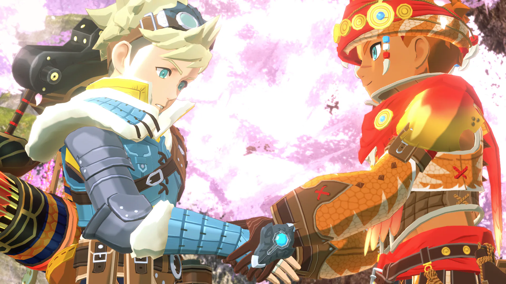
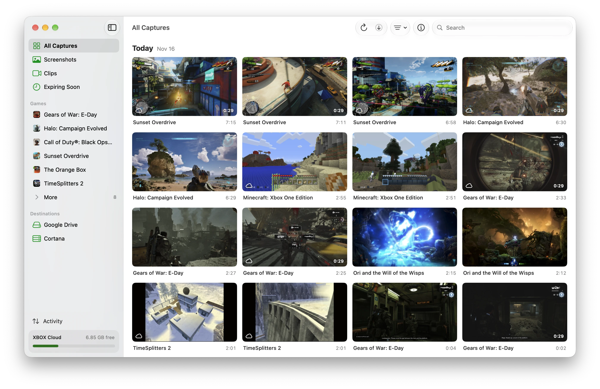
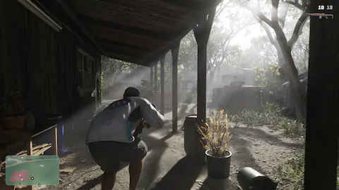
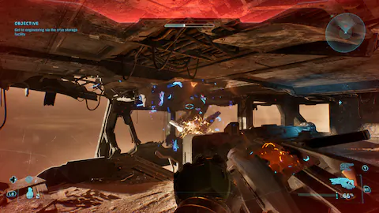
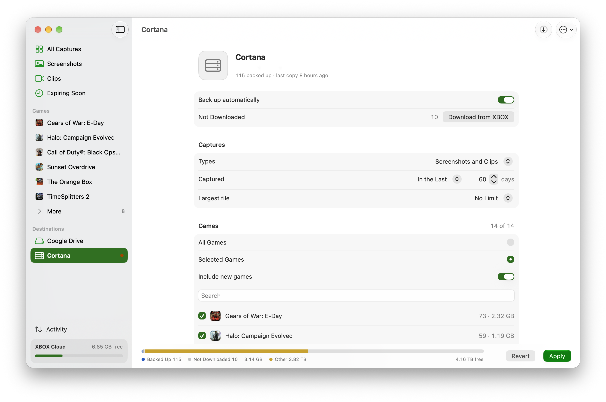
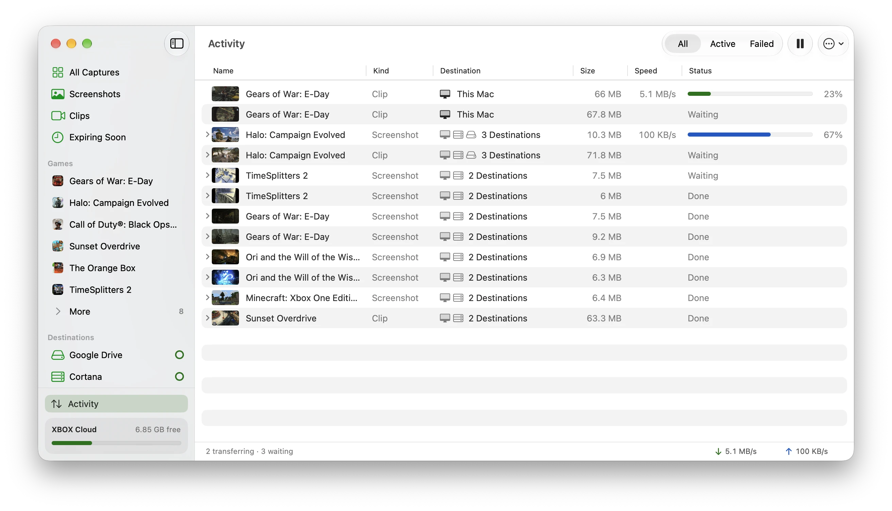
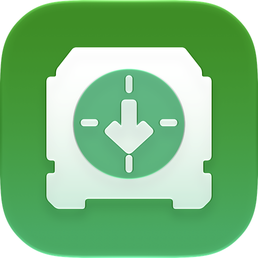

Lit by your game.
Each capture sets the mood. Its colors glow softly around the frame and shift with a clip as it plays, the way your screen lights up a dark room.

TangoDown for Mac
XBOX network deletes your screenshots and game clips 90 days after they upload. TangoDown saves every one to your Mac, then backs it up to wherever you keep things.
Version 1.0.9 · macOS 26 or later


,
on your Mac.TangoDown checks XBOX network for new screenshots and game clips and brings them home to your Mac. Then it backs them up to the places you choose.
TangoDown checks XBOX network every ten minutes, or on the schedule you set, for screenshots and clips it hasn’t seen.
With “Download new captures automatically” on, they come straight to your Mac. You don’t click a thing.
Into a folder for each game and month, under names you can read at a glance.
Gears of War - E-Day/2026-10/2026-10-20 05.51.05 Gears of War - E-Day screenshot.png
Then each place you’ve added gets its own copy, so your gaming memories become a little sturdier.
If a capture still isn’t on your Mac a week before XBOX deletes it, TangoDown lets you know, and again three days before.
Backups
Add iCloud Drive, Google Drive, Dropbox,1 a NAS or any WebDAV server, and TangoDown copies your captures to each one. They’re regular files, in the same folders as on your Mac.
iCloud Drive, an external drive, a folder on your Mac. If you can choose it in Finder, TangoDown can back up to it.
Uploads straight to your Drive through Google’s own API, signed in with an app in your own Google Cloud account. Nothing shared, no one in between.1
Copies into an App folder in your Dropbox, signed in with your own Dropbox app.1
Finds the NAS on your network and copies to it directly, without mounting a thing. Synology, QNAP, Windows or another Mac. A copy that stops picks up where it left off, where the server allows.
Nextcloud, your NAS’s WebDAV service, or any WebDAV server you can sign in to.
Each destination takes the kinds, games and dates you pick, up to the file size you set.
Remove a download from your Mac, and its backups stay where they are.
Check Backups asks each destination whether your files are really still there.

Library
Every capture, sorted by game, each game with its XBOX icon in the sidebar. Click, Shift-click, ⌘-click or drag to select, and right-click for the menu. If you know Finder, you already know TangoDown.
Open any capture full size. With a few selected, ← and → step through just those.
Drag games in the sidebar into the order you like. New ones join at the end.
Search by game title, or show only what’s downloaded, what isn’t, or what failed.
Design
Built natively in SwiftUI, with Liquid Glass throughout. The finishing touches got as much care as the big features. Try a few.
Each capture sets the mood. Its colors glow softly around the frame and shift with a clip as it plays, the way your screen lights up a dark room.

Click to check XBOX for new captures. The arrow breaks into beads while it looks, then they gather to draw the answer.
Make the window wider or narrower and every capture glides to its new place, however many columns it crosses.
Live Photo
Pick up to ten seconds of any saved clip and the frame that becomes the photo. AirDrop it straight to your iPhone and it arrives as a Live Photo, sound and all. Press and hold to relive the moment, or share it on any social app that supports Live Photos.2
3.0 s·photo at 0:05.0
Drag the yellow handles to choose the moment, and the white frame to choose the photo. Then press and hold the picture.
Check now, pause transfers, see what’s about to expire. Turn on Open at login, and TangoDown is always there and never in the way.
TangoDown checks XBOX every ten minutes. Or as often as every five, or as rarely as every six hours.
How much of your XBOX cloud storage is still free,3 right at the foot of the sidebar.
Downloads and copies, with their speed and progress. Pause, resume or retry one, or all of them at once.

Remove Backed-Up Downloads clears what your destinations already hold off your Mac. Run Check Backups first, if you like to be sure.
No TangoDown account, no TangoDown servers. Captures go from XBOX to your Mac to your destinations, and every sign-in is sealed by your Mac’s Secure Enclave.
TangoDown follows your Mac’s language, or whichever you choose. Folder and file names stay the same in every one.
VoiceOver reads each capture’s game, kind, length and date. Full keyboard control, and Reduce Transparency, Reduce Motion and Increase Contrast, all respected.

Sign in with XBOX, and TangoDown takes it from there.
Version 1.0.9 · macOS 26 or later
TangoDown isn’t notarized by Apple, so macOS asks you to confirm it once.
After that, TangoDown opens like any other app. Do the same after installing a new version.